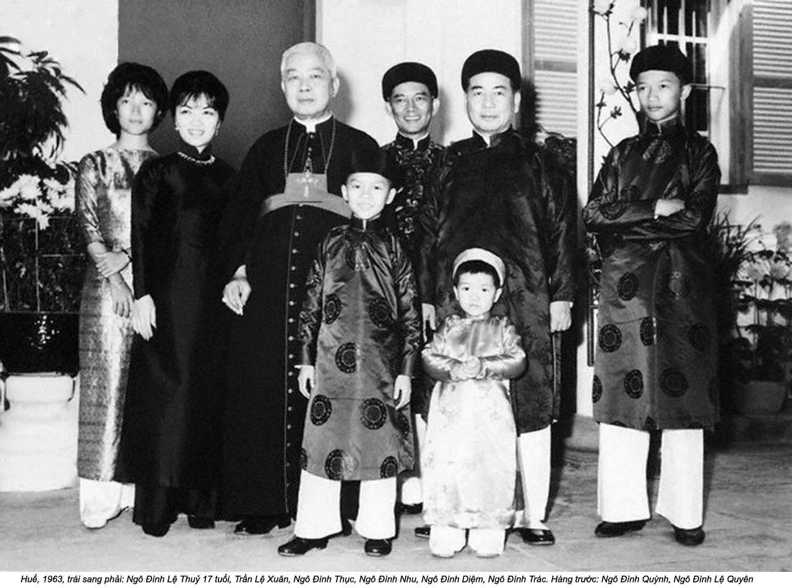
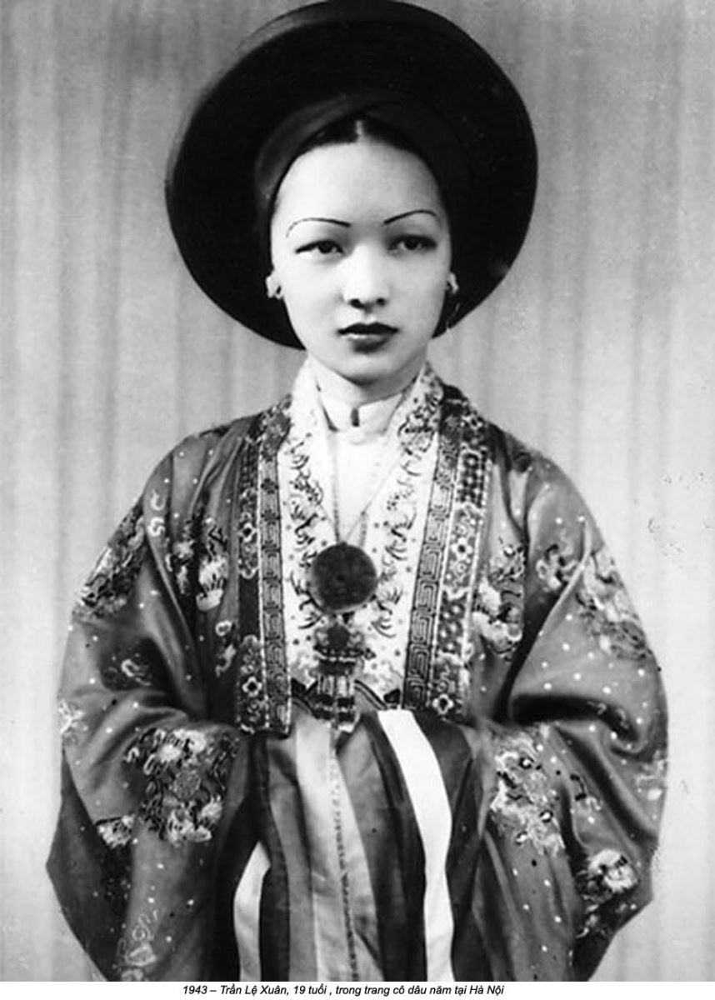

Chương 4

Gia đình ông Chương đã trở lại Hà Nội trước sinh nhật thứ tám của Lệ Xuân. Cha cô đã được bổ nhiệm vào luật sư đoàn Hà Nội, công việc sáng giá nhất mà một luật sư Việt có thể nhắm tới trong chế độ thực dân. Mặc dù là một vinh dự, đó cũng là lời nhắc nhở về những sự lựa chọn hạn hẹp có thể có được ngay với một người Việt học thức nhất.(1)
Sau bảy năm ở vùng thôn quê miến Nam, Hà Nội là một thành phố lạ lẫm với Lệ Xuân. Người ta nói chuyện bằng cái giọng đầy hơi gió kiểu cách. Họ nhấn những tiếng trầm bằng những cú ngắt nghỉ nặng nề trong khi người miền Nam chỉ cần nói lướt qua. Thức ăn thì kém ngọt hơn. Không còn có những khoanh dứa hoặc xoài nổi bổng bềnh trong bát canh, món dùng với cơm trong hầu hết các bữa ăn nữa. Mỗi lần Lệ Xuân cắn một thứ gì, kể cả thứ cô nghĩ mình biết, cô vẫn phải thận trọng. Những cuộn chả giò giòn rụm ở miền Nam, được gọi là nem ở Hà Nội, và nước chấm của chúng ở miền Bắc có vị cay khác hẳn, vị cay của hạt tiêu đen làm nhột nhạt sóng mũi cô thay vì sức ấm nóng lan tỏa của quả ớt ở miền Nam.
Ở Hà Nội, Lệ Xuân cảm thấy lạc lõng kỳ lạ vì một lý do khác: để tránh né những hệ lụy rắc rối về chủng tộc trong một thành phố đông đúc là việc khó khăn thậm tệ. Trong chừng mực nào đó, sự giàu có và vị thế ưu tú của gia đình ông Chương giảm nhẹ sự kỳ thị ắt hẳn khốc liệt của một thành phố thực dân. Ngôi nhà của họ, số 71 đại lộ Gambetta, là một trang viên uy nghi, cao và hẹp với mái hai mảng, những căn phòng có đầu hồi, và cửa sổ trên mái. Trông nó cũng giống những ngôi nhà khác trong khu vực của họ, nhưng hầu hết thuộc về các gia đình Pháp. Thật ra, cả khu này được biết đến như là phố người Pháp. Vào cuối thế kỷ XIX, các nhà quy hoạch đô thị thuộc địa đã san lấp đầm lầy và tạo ra những đại lộ thênh thang che bóng bởi những hàng me. Một du khách người Anh đến Hà Nội đã miêu tả cái phong cảnh mà ắt hẳn là điều Lệ Xuân cảm thấy vào năm 1932: “Những ngôi biệt thự hoàn toàn Pháp, trơ gan cùng gió dập mưa vùi... và nếu không vì những cây cọ, giàn bông giấy... ta có thể ngỡ đang đứng giữa một khu ngoại ô dễ thương nào đó ở Paris”.(2)
Lệ Xuân chỉ nhìn thấy đời sống đô thị Việt Nam khi được chở ngang qua thành phố - hoặc từ đằng sau cửa kính một chiếc Mercedes hoặc từ chiếc càng xe xích lô, một cỗ xe hẹp, mui trần lăn bánh bởi guồng đạp pê-đan của một người hầu. Việc len lỏi qua mớ bòng bong lộn xộn của ba mươi sáu phố phường mệnh danh Phố Cổ nằm về phía tây bắc nhà ông Chương sẽ dễ dàng hơn nhiều với một chiếc xích lô. Những ngôi nhà truyền thống dựng bằng vách đất và mái rơm. Những ngõ hẹp ngoài sức tưởng tượng nối liền các ngôi nhà, tạo ra một mê cung thật sự. Đằng sau những ô cửa tối ám, những người thợ thủ công cặm cụi với công việc từ tinh mơ đến tối trời, dệt lụa, dát bạc, hoặc đan lọng, với cùng những thao tác hệt như cha ông họ. Những tiệm mì vỉa hè và những hàng quán tỏa mùi thơm nghi ngút không gian.
Mặc dù Phố Cổ cách nơi Lệ Xuân sống không đầy một cây số, giữa chúng là cả một vực thẳm ngăn cách. Người khá giả có thể ở trong những ngôi nhà gỗ mái ngói, nhưng số khác với nơi nương tựa kém vững vàng hơn, phải khốn khổ với những cơn mưa xối xả mùa hè và cái rét cắt da mùa đông. Cuộc Đại suy thoái càng khiến cho điều kiện sinh sống của người Việt ở Hà Nội thêm căng thẳng. Những nông dân rời bỏ miền quê lên thành phố tìm kiếm cơ hội để rồi chẳng được gì. Những cống rãnh lộ thiên và những khu nhà ổ chuột mở rộng ra ngoại vi thành phố. Bạo lực tràn ngập giữa những kẻ bất mãn.
Bé Lệ Xuân tám tuổi đã có một trải nghiệm khác về sự bất công thời thực dân. Cô học một ngôi trường Pháp cùng với trẻ em Pháp và nói tiếng Pháp với cha mẹ ở nhà. Ông bà Chương và số ít người Việt có điều kiện như họ đã tham gia vào những trò tiêu khiển Tây phương, như môn tennis và thậm chí yoyo. Phụ nữ bắt chước mốt thời trang Paris; những áo cánh cổ thuyền mời gọi một cái liếc trộm vào làn da mềm mại bên dưới xương đòn, và khuôn phép lịch sự đã không còn đòi hỏi phụ nữ phải nai nịt ngực quá chặt. Phấn hồng, son môi, và nước hoa trở thành mốt thịnh hành. Cuộc sống xa hoa là một bàn tiệc thịnh soạn chảy tràn sâm banh Pháp và nhạc swing rộn rã.
Lệ Xuân muốn hòa hợp với môi trường mới mẻ xung quanh mình, nhưng bằng cách nào? Người bạn thân thiết nhất từ thời thơ ấu của Lệ Xuân cũng là một kẻ ngoài cuộc lạc lõng, một cô gái người Nhật. Nỗi bất hạnh chung của họ đã tạo nên một mối quan hệ lâu bền, và họ vẫn còn giữ liên lạc với nhau suốt đời. Hầu hết những người Việt khác mà Lệ Xuân thường nhìn thấy thuộc vào số hai mươi người làm công trong gia đình, bao gồm đầu bếp, tài xế, bảo mẫu, và người làm vườn. Cô gái nhỏ hiểu biết lịch sử Pháp khá tường tận để biết rằng con đường nhà cô, một trục lộ chính chạy từ đông sang tây xuyên qua thành phố, được đặt tên theo Leon Gambetta, một chính khách Pháp thế kỷ mười chín tin rằng thanh thế của nước Pháp trên thế giới xoay quanh chủ nghĩa thực dân hung hăng - trong việc đi xâm lược các dân tộc và đất đai. Người Pháp có mặt ở Việt Nam từ thập niên 1860, và bảy thập niên hiện diện của Âu châu trên mảnh đất này chẳng là gì so với lịch sử một ngàn năm Bắc thuộc của Việt Nam; dù thế nào đi nữa, sự bất công thời thực dân đối với bé Lệ Xuân là một thực tế của cuộc sống.
Thực vậy, người Pháp ngăn cấm dùng từ “Việt Nam”, vốn ngụ ý sự thống nhất của một quốc gia. Để giữ cho quyền lực thực dân không bị sứt mẻ, người Pháp đã kìm hãm không cho Việt Nam trở nên quá mạnh - vì vậy họ đã dùng thủ đoạn chia ra để cai trị. Chính quyền của quốc gia được chia làm ba phần: miền Bắc (Bắc Kỳ) và miền Trung (An Nam) là những lãnh thổ thuộc chủ quyền của người Việt trên danh nghĩa, hoặc lãnh thổ bị bảo hộ, của Pháp. Phần phía nam giàu tài nguyên của quốc gia, Nam Kỳ, được cai trị trực tiếp bởi chế độ thực dân. Từ thuộc địa này người ta cắt ra những khu đất rộng lớn để sản xuất lúa gạo, cao su, và những sản vật giá trị khác. Để tài trợ cho chính quyền thực dân, nhà nước Pháp dựa vào lợi tức từ những mặt hàng độc quyền mà nó kiểm soát: muối, rượu, và đặc biệt là thuốc phiện. Người Pháp biết rõ thuốc phiện nguy hiểm thế nào, nhưng họ cũng biết sự nghiện ngập có thể mang lại lợi nhuận to lớn ra sao. Họ mở những trung tâm buôn bán thuốc phiện trong mọi ngôi làng. Những làng nào không đáp ứng chỉ tiêu doanh số của họ sẽ bị trừng phạt.(3)
Sự thịnh vượng ở vùng thuộc địa Đông Dương có một mặt khuất tăm tối. Có những câu chuyện về những gia đình trong làng buộc phải bán con để trả những khoản thuế hà khắc. Điều kiện làm việc trong những xí nghiệp do người Pháp điều hành, trong những hầm mỏ, hoặc trên những đồn điền cao su là địa ngục trần gian đối với những công nhân Việt Nam. Bệnh sốt rét và dịch tả hoành hành tràn lan, và chỉ có vừa đủ gạo để bù đắp cho những ngày làm việc mười hai tiếng ròng rã. Một công nhân tại đồn điền Michelin đã chứng kiến quản đốc người Pháp gọi những tên lính tới trừng trị bảy người muốn bỏ trốn; ông ta “bắt những người bỏ trốn nằm phục xuống đất và khiến những tên lính chân mang bốt tán đinh giẫm đạp lên xương sườn họ. Đứng bên ngoài tôi có thể nghe thấy tiếng xương gãy răng rắc”.(4) Người ta kể rằng những ông chủ xí nghiệp thường nhốt con của công nhân trong những chiếc cũi tối tăm và chỉ trả chúng về vào cuối ngày làm việc cho những công nhân mình mẩy lấm lem dơ dáy.
Lợi nhuận không phải là động cơ duy nhất khuyến khích người Pháp tin rằng những nguồn tài nguyên thiên nhiên ở Đông Dương là của họ để chiếm lấy. Họ tin rằng người Việt Nam thấp kém hơn về mặt sinh học.(5) Người Pháp gọi người Việt Nam, bất kể đến từ vùng nào, là Annamite. Từ này bắt nguồn từ tiếng Trung Quốc, nhưng với người Pháp nó nghe rất giống như une mite, nghĩa là sâu bọ hoặc kẻ ăn bám. Một từ khác họ dùng để chỉ người Việt, bất kể thuộc giai cấp nào, là nhà quê, hoặc nông dàn. Một cư dân thành thị có học thức sẽ nổi giận trước cái lối mô tả này, nhưng những người thận trọng và những người giống như cha của Lệ Xuân, vốn có quá nhiều thứ để mất, không dám thể hiện sự bất mãn của họ.
Gia đình ông Chương không tham gia vào bất kỳ hoạt động chống Pháp công khai nào - ít ra đến thời điểm này. Cuộc sống của họ quá sung túc để mạo hiểm. Nhưng ngay cả như thế họ vẫn có thể thấy rằng chế độ thực dân đang bị thách đố gay gắt. Thời điểm gia đình ông Chương quay lại Hà Nội trùng hợp với thời điểm sau khi xảy ra khởi nghĩa Yên Bái, cuộc bạo loạn ghê gớm nhất vùng mà người ta từng chứng kiến trong thời Pháp thuộc.
Tháng Hai năm 1930, một nhóm người Việt theo chủ nghĩa dân tộc (Việt Nam Quốc Dân Đảng - VNQDĐ) đã tấn công một bốt đóng quân ở miền Bắc Việt Nam, giết chết những sĩ quan Pháp trú đóng ở đó và chiếm một kho vũ khí. Để giữ vững quyền lực của mình, người Pháp phản ứng bằng một cuộc phô trương uy vũ với ý định làm cho người Việt sợ hãi mà khuất phục trở lại. Chính quyền thực dân kiểm soát chặt chẽ những kẻ bị nghi ngờ phiến loạn, chém đầu những ai họ bắt được, và ném bom vào những đám đông tụ tập và những ngôi làng khả nghi.(6)
Ngôi trường của bọn trẻ ở Hà Nội nằm kế bên dinh thự của quan toàn quyền Pháp. Tòa nhà màu nghệ tây vẫn còn đến hôm nay nhưng được dùng làm văn phòng và phòng tiếp tân của Uỷ ban Trung ương Đảng Cộng sản Việt Nam. Vào thời Lệ Xuân, ngôi trường được đặt tên theo Albert Sarraut, Toàn quyền Đông Dương từ 1911 đến 1913. Mặc dù Sarraut được ca ngợi bởi việc thúc đẩy cải cách giáo dục, động cơ của ông, từ căn đế, là một thí dụ khó chịu khác về sự thắng thế của chủ nghĩa phân biệt chủng tộc. Ông tin rằng người Việt không thể được khai hóa cho đến khi tư tưởng, phong tục tập quán, và những thể chế của họ được phản ánh theo nước Pháp. Đối với Albert Sarraut, người chiến sĩ tự xưng của công cuộc cải cách giáo dục bản địa, người Việt Nam “sẽ xứng đáng được giải phóng khỏi sự cai trị của Pháp chỉ khi họ không còn khao khát là người Việt, nhưng là người Pháp da vàng”.(7)
Lệ Xuân được dạy nói, đọc, viết, và suy nghĩ như một nữ sinh Pháp bé nhỏ. Cô học thuộc thứ tự các vị vua nước Pháp và ngày tháng tất cả những cuộc chiến giữa Pháp và Anh. Cô có thể đọc vanh vách những cánh rừng và những ngọn núi tuyết phủ mà thậm chí chưa từng nhìn thấy chúng. Cô làm bài kiểm tra về thi ca và chính tả tiếng Pháp nhưng không được học về di sản của đất nước mình. Lệ Xuân có bổn phận phải quên cô là người Việt và được khích lệ để tin rằng định mệnh của cô là trở thành một phần của một nền văn hóa khác, ưu việt hơn.
Giờ đây khi gia đình đã trở lại Hà Nội và bọn trẻ bận bịu với trường lớp, người phụ nữ của gia đình, bà Chương, có thể tận hưởng chút ít tự do. Thoát khỏi miền thôn quê truyền thống, áp lực sinh con đẻ cái, và sự can thiệp của mẹ chồng, bà Chương có thể khám phá ý nghĩa của việc là một người phụ nữ Việt trong một kỷ nguyên của sự thể nghiệm và thậm chí buông thả. Là điều không thể tưởng nghĩ chỉ một thế hệ trước, phụ nữ Việt giờ đầy có thể đứng cùng chồng ở những nơi công cộng như nhà hàng và vũ trường.
Không phải bó chặt bộ ngực sau tấm áo chùng, bà Chương đã có thể trưng diện sắc vóc của mình. Bà có thể mặc những bộ quần áo đặt may, chạy theo những mốt mới nhất, như áo váy có viền ren. Cửa hàng bách hóa Godard ở góc phố Paul Bert bán bít tất lụa, mũ, và kẹp tóc. Sự thiên vị của người Pháp với gia đình ông Chương mang lại cho họ phương tiện kinh tế để theo đuổi tất cả những thú vui Âu châu ở Hà Nội. Một chiếc Mercedes có tài xế riêng đưa họ đi xung quanh thành phố; họ ăn trong những nhà hàng Trung Hoa trang nhã nhất thành phố và xem những bộ phim Mỹ và Pháp ở rạp xi nê. Rạp Palace hiện đại và đắt đỏ nhất trong số bảy rạp chiếu bóng ở Hà Nội, nhưng ngay cả người Việt nghèo nhất ở thành thị vẫn có thể xem phim. Có một rạp Trung Hoa bên kia thành phố, nơi mọi người ngồi xổm cùng nhau trên những thanh gỗ, vươn cổ ngoẹo đầu để nhìn rõ màn ảnh. Có một loại vé thậm chí rẻ hơn nữa dành cho những ai sẵn lòng đứng ở phía ngược màn hình và xem những hình ảnh lập lòe từ sau ra trước.(8)
Vào những chiều thứ Ba, bà Chương mở tiệc chiêu đãi ở nhà. Khách là người Việt và người Pháp - và sau năm 1939 là người Nhật. Đàn ông và đàn bà thoải mái trộn lẫn vào nhau sau những tuần bánh và rượu cốc tai trong phòng khách. Tất cả những nhân vật quan trọng, hoặc một ngày nào đó sẽ quan trọng, đều tham dự.
Tiếng cười và trò chuyện trôi lơ lửng trên những ngọn đèn chùm pha lê và cuộn lên cầu thang đến chiếu nghỉ nơi những đứa trẻ đang thu mình, nghe lỏm chuyện người lớn bên dưới.
Bà Chương đang thích nghi với truyền thống, có từ thời Cách mạng Pháp, của những phụ nữ tinh anh chủ trì những cuộc họp xa lông, nơi khách khứa có thể tham gia vào những cuộc tranh luận đầy trí tuệ về nghệ thuật, văn chương, và thậm chí chính trị. Những người đàn ông quyền thế luôn luôn có mặt trong những cuộc hội họp tại nhà bà Chương, nhưng những quan điểm về bình đẳng nam nữ và nữ quyền đã trở thành phương tiện biểu đạt để tranh biện về một để tài khác, một đề tài quá nguy hiểm để bàn luận công khai: Giải phóng Việt Nam khỏi chủ nghĩa thực dân Pháp. Ở đó những cuộc tranh luận sôi nổi về vai trò thích đáng của phụ nữ, giá trị của giáo dục đối với nữ giới, và sự cân bằng giữa tổ ấm gia đình và đời sống công cộng, nhưng tại căn để của tất cả những câu hỏi này là một vấn đề lớn lao hơn nhiều: Làm thế nào để Việt Nam có thể trở nên hiện đại và tự do?
Tôi đã kỳ vọng tìm được nhiều thông tin về những cuộc họp mặt thứ Ba của bà Chương trong những văn khổ của French Sureté, hay mật vụ Pháp lừng danh, nhưng thay cho tin tức tình báo về những con người nguy hiểm bà đã tiếp đãi và những tư tưởng nguy hiểm đã luận bàn, tôi tìm thấy một sự mô tả thô tục về cuộc sống của vợ chồng ông Chương.
Không có gì trong những tập hồ sơ tiếng Pháp xác nhận ý tứ về “sự vinh quang” mà bản cáo phó của ông bà Chương mô tả rất nhiều năm sau. Sự thực hoàn toàn trái lại. Tướng quân đội Pháp Georges Aymé miêu tả cha bà Lệ Xuân, ông Chương, là “người khá còi cọc”, một khí lực ẻo lả không làm thỏa mãn được vợ mình. Lời tử tế nhất tôi có thể tìm thấy về ông Chương trong văn khố miêu tả ông “thông minh, đúng hơn là tinh tế”. Điều đó có vẻ khác xa bức chân dung về một nhà ngoại giao lỗi lạc vào lúc chết.
Nhưng mô tả về bà Chương làm tôi sốc nhất. “Vợ ông Chương đẹp và rất hấp dẫn. Giữa người An Nam với nhau, người ta biết rằng bà là người chỉ huy, điều khiển chồng mình”. Điều đó không có gì đáng ngạc nhiên. Ngay khi hai bên thái dương đã điểm hoa râm, bà Chương luôn trông có vẻ vương giả và tự chủ trong những tấm hình mà tôi đã xem. Nhưng tôi chưa bao giờ nhìn thấy một tấm hình nào lột tả khía cạnh hoang dại trong tính cách của bà - mà theo mật vụ Pháp, “nổi tiếng khắp Đông Dương”. Bà cũng nổi tiếng không kém với “tham vọng lì lợm cũng như tính cách coucheries utilitaires - lang chạ với những người có uy thế thuộc bất kỳ quốc tịch nào”.
Những báo cáo tiếng Pháp đã điểm danh những tình nhân của bà, bao gồm một con người xuất chúng và nguy hiểm nhất. Một thời gian sau khi đến, vào năm 1939, nhà ngoại giao Nhật Bản Yokoyama Masayuki đã phản bội người vợ Pháp của ông vì bà Chương; đổi lại, bà đã được miêu tả là còn hơn cả nhân tình của ông.(9) Bà Chương đã trở thành “cánh tay mặt” của lãnh sự Nhật ở Hà Nội. Đối với người Pháp, việc một phụ nữ thông minh và tham vọng như bà Chương lựa chọn người Nhật thay vì người Pháp là một dấu hiệu đáng ngại. Bà đang làm những gì có thể để giúp giữ vững vị thế tốt đẹp của gia đình trên cồn cát chính trị biến động không ngừng.
Đủ thứ luận điệu đã được truyền đến Paris trên những tờ giấy vỏ hành phai màu và được lưu trữ như những mẩu chuyện tầm phào của các nhà ngoại giao cho hậu thế. Theo một lời đồn thổi đã trở thành câu chuyện phiếm bên ly cà phê của nhiều người nhiều năm về sau, trong số nhiều nhân tình của bà Chương ở Hà Nội có một người đàn ông tên Ngô Đình Nhu.(10)
Ông Nhu đang tiến gần đến tuổi ba mươi khi được giới thiệu với cô Lệ Xuân mười lăm tuổi vào năm 1940. Là một người đàn ông độc thân với gia thế tốt đẹp ở Huế, dáng vẻ điển trai của ông càng tăng thêm cùng với tuổi tác và trải nghiệm. Họ đã gặp nhau trong khu vườn nhà ông Chương ở Hà Nội. Ông Nhu vừa trở về Việt Nam sau gần một thập niên học hành ở Pháp. Tấm bằng đầu tiên ông có được là về văn chương. Sau đó, trong khi đang theo học ngành quản thủ thư viện, ông đã lấy một bằng cấp về cổ tự học, từ trường Pháp điển quốc gia danh giá ở Paris. Ông Nhu đang bắt đầu một vị trí tại cơ quan văn khố Hà Nội khi ông gặp Lệ Xuân.(11) Tất cả những điều đó có vẻ mang tính sách vở và nhỏ nhặt với một người giàu kinh nghiệm, nhưng với Lệ Xuân, bấy giờ vẫn đang học trung học và chưa bao giờ ra khỏi đất nước, trải nghiệm ở hải ngoại của ông Nhu mang lại cho ông một nét hấp dẫn kỳ lạ. Một cuộc hôn nhân sẽ giải phóng cô khỏi những nỗi bẽ mặt hàng ngày mà gia đình cô gây ra. Có vẻ như với Lệ Xuân một người đàn ông ham mê sách vở hơn chính trị sẽ là nỗi khuây khỏa sau những trò chơi hai mặt và phản bội mà bà đã chứng kiến trong cuộc hôn nhân của chính cha mẹ mình. Việc ông Nhu mỉm cười nhiều hơn nói chuyện có vẻ là một biểu hiện tốt nữa. Kết hôn là bước tiếp theo với một cô gái có giáo dục, và Lệ Xuân không nghĩ cô hơn ông Nhu về điểm này.
Ngặt nỗi ông Nhu thuộc về một gia đình Công giáo kiên trung. Trong tầng lớp tinh anh Việt Nam thì người Công giáo chiếm thiểu số và có phần kỳ lạ. Tuy vậy, điều đó khá tốt với kỳ vọng của một người con gái thứ như cô.

Ông Nhu là con trai thứ tư trong gia đình. Cha ông, Ngô Đình Khả, đã từng nắm giữ vị trí quan trọng trong triều đình Huế, nhưng vào thời điểm ông Nhu chào đời năm 1910, người Pháp đã phế truất vị hoàng đế mà ông phụng sự. Vì lòng trung thành với chủ, ông đã từ chức và đưa gia quyến về quê nuôi trâu và trồng lúa, một bước lùi đáng chú ý, nếu không nói là đáng khâm phục. Thái độ phản kháng sự can thiệp của Pháp vào chính sự Việt Nam đã củng cố một ý thức danh dự và trách nhiệm dân tộc của gia đình - những phẩm cách đã được truyền thừa cho cả sáu người con trai của ông.
Mỗi sáu giờ sáng, chín người con của ông Khả tập hợp lại. Sau đó, đến trường. Ông cũng bảo ban họ siêng năng làm việc đồng áng, lấm lem bùn đất cùng những nông dân địa phương. Mặc dù bản thân ông Khả mặc áo choàng lụa truyền thống của một người có học và để móng tay dài năm phân như một biểu hiện của vị thế quan lại, ông không ngừng quở trách các con trai rằng “một người đàn ông phải thấu hiểu đời sống của nhà nông”.
Ông Khả đích thân giám sát việc học hành của các con trai, ở trường và ở nhà. Ở trường, ông yêu cầu họ theo chương trình Âu châu. Ở nhà, ông dạy họ tiếng phổ thông kinh điển (chữ Nho). Ngoài sự chú trọng về học thuật, nhà ông Khả là nơi học tập về quan điểm chính trị chống Pháp theo dân tộc chủ nghĩa.
Vào thời điểm ông Nhu và Lệ Xuân gặp nhau lần đầu tiên, những người anh trong gia đình họ Ngô đã xác lập những sự nghiệp lỗi lạc. Người anh cả bấy giờ đang làm thống đốc tỉnh. Người anh thứ hai đang trên bước đường trở thành một trong những vị giám mục Công giáo đầu tiên ở Việt Nam. Người anh thứ ba, thành viên trực tiếp góp bàn tay vào việc nhào nặn tương lai dân tộc, là Tổng thống tương lai của miền Nam Việt Nam, ông Ngô Đình Diệm.
Trong những cuộc phỏng vấn về sau với các ký giả Tây phương, bà Nhu thẳng thắn thừa nhận rằng cuộc hôn nhân của bà với ông Nhu là vấn đề thực tế, không phải chuyện yêu đương lãng mạn. “Tôi chưa từng có một tình yêu ngọt ngào”. Bà thú nhận với Charlie Mohr của tạp chí Time. “Tôi đã đọc những thứ đó trong sách vở, nhưng tôi không tin chúng thật sự tồn tại. Hay có lẽ chỉ với một số rất ít người mà thôi”.(12)
Nhưng cô gái trẻ Lệ Xuân là một diễn viên có tài, và cô biết nhận ra một vai diễn phù hợp.
Năm 1940, ngay trước khi gặp ông Nhu, những nữ sinh trường múa ba lê Madame Parmentier đang chuẩn bị diễn vở Bạch Tuyết. Những nữ sinh người Pháp và Việt khác từ chối đóng vai mụ phù thủy gớm ghiếc, nhưng Lệ Xuân đã nhìn thấy tiềm năng trong vai diễn này. Cô hẳn không bao giờ được cho đóng Bạch Tuyết; vai đó sẽ vào tay một cô gái Pháp da trắng. Song cô vẫn có thể tỏa sáng trên sân khấu bằng một vai diễn độc ác xuất sắc.
Lệ Xuân đã nhìn thấy ông Nhu như một cơ hội. Bất luận vì tình yêu, tham vọng, hay là lợi dụng lẫn nhau, Lệ Xuân và ông Nhu đã đính ước không lâu sau buổi gặp gỡ trong vườn. Họ đã đính hôn trong ba năm, một truyền thống của người Việt, mặc dù việc đó không phải theo ý của cha mẹ Lệ Xuân. Nhưng trong quãng thời gian ấy, từ 1940 đến 1943, cái thế giới mà Lệ Xuân hằng biết đã hoàn toàn thay đổi.
Thế chiến thứ hai đã nổ ra ở Âu châu. Sự bại trận của nước Pháp đã gần như cắt phăng Đông Dương khỏi mẫu quốc. Chính quyền Vichy ở Pháp cho phép Nhật Bản chuyển quân đến miền Nam Trung Quốc thông qua Bắc Việt, xây dựng những sân bay, trưng thu lương thực, và đóng 6.000 quân ở Bắc Kỳ.
Những nhà ngoại giao Nhật, người thông ngôn, những chuyên viên tình báo, và doanh nhân người Nhật đã chiếm giữ những vị trí danh dự trong những cuộc họp xa lông chiều thứ Ba tại nhà ông Chương, và những tay thực dân Pháp ở Đông Dương rất lấy làm khó chịu về điều này. Họ đơn giản là không thể, hoặc không chịu tin rằng sự đầu hàng của họ ở Âu châu đã làm phương hại đến quyền cai trị của họ ở Đông Dương. Vì vậy trong một thời gian, người Pháp gắng sức níu kéo cuộc sống thường ngày của mình, giữ lại những người hầu, ăn mặc trang trọng trong bữa tiệc tối, và tụ tập tại các quán cà phê để tán gẫu về những chuyến du ngoạn cuối tuần về miền biển hoặc người thắng tại các cuộc đua ngựa. Người Pháp có thể đã trao chứng từ tài sản thuộc địa của họ ở Đông Dương cho người Nhật, nhưng trong năm năm tiếp theo, họ sẽ tìm mọi cách để giữ thể diện cho mình. Lá cờ Pháp vẫn tiếp tục phất phới. Những tiệm bánh, bị cắt mất 20.000 tấn lúa mì nhập khẩu hàng năm, vẫn gắng gượng dựng lên một ảo tưởng cuối cùng, đã nhồi bánh mì từ bắp và gạo. Đông Dương là khu vực Đông Nam Á duy nhất dưới sự kiểm soát của Nhật Bản cho phép những người thực dân da trắng lưu lại.
Năm 1942, phiếu lương thực đã được cấp cho những người Ấu châu để cung cấp gạo, muối, đường, dầu ăn, xà phòng, diêm, thuốc lá “tốt”, và nhiên liệu cho họ. Người Pháp vẫn được thiên vị với những thứ như thịt và sữa đặc, họ được ưu tiên cung cấp trước nhất. Tất cả những điều này được biện hộ trong tư duy thời thực dân bởi quan niệm rằng người An Nam đã quen với chế độ ăn uống đơn điệu, trong khi người Âu châu sẽ ngã bệnh với khẩu phần ăn kém đa dạng.
Mặc dù gia đình ông Chương thật ra không phải chịu khổ, họ đã bị tước đi những thứ hàng hóa xa xỉ mà họ đã quen dùng. Nhưng nhà ông Chương là bậc thầy về những thủ đoạn chính trị và họ xoay xở khá tốt - ít ra trong một thời gian. Sự thâm nhập của người Nhật vào chế độ trên danh nghĩa của Pháp đã tạo nên một tình trạng chính trị khá rối ren. Ai là kẻ đang nắm quyền, người phương Tây hay người châu Á? Ai sẽ cảm thông hơn với những nguyện vọng dân tộc chủ nghĩa của người Việt? Gia đình ông Chương cố gắng vun đắp những tình bạn quan trọng với cả hai phía, nhưng rốt cuộc họ đã chọn chia sẻ số phận với người Nhật dưới ngọn cờ “Tình huynh đệ da vàng”. Người Nhật khuyến khích người Việt Nam tự coi mình như một phần của Khối thịnh vượng chung Á châu - được lãnh đạo bởi Nhật Bản, tất nhiên. Ít ra người Nhật không quả quyết sự ưu việt dựa trên màu da của họ.
Mẹ của Lệ Xuân đã đăng ký những khóa học tiếng Nhật, và tình yêu của bà với Yokoyama, phái viên của hoàng đế xứ mặt trời mọc ở Hà Nội, đã sớm được tưởng thưởng. Năm 1945, tình nhân Yokoyama của bà được bổ nhiệm làm công sứ An Nam, và Trần Văn Chương, chồng bà, được để bạt vào nội các chính phủ bù nhìn của Nhật Bản.

1943 – Trần Lệ Xuân, 19 tuổi, trong trang cô dâu tại Hà Nội
Lệ Xuân và Ngô Đình Nhu kết hôn trong tuần đầu tiên của tháng Năm, 1943 tại thánh đường Saint Joseph ở Hà Nội, hay như cách gọi của dân Hà Nội, Nhà Thờ Lớn. Đó là lần thứ hai Lệ Xuân đặt chân vào giáo đường mang phong cách tân gô-tích cao chót vót này. Lần đầu là vào ngày trước đó để làm lễ cải đạo sang Công giáo. Cô mang tất tay dài và một chiếc khăn choàng đăng ten quấn quanh mái tóc đen và chảy dài xuống đôi vai. Lời tuyên xưng đức tin, mà Lệ Xuân đọc to, khẳng định niềm tin mới của cô vào Thiên Chúa, Chúa Giê-su, Chúa thánh thần, và giáo hội cùng tất cả những phép bí tích của nó. Vị linh mục vừa đọc nhân danh Cha, và Con, và Thánh thần vừa rưới nước thánh lên trán Lệ Xuân ba lần, sau đây mọi tội lỗi của cô đã được rửa sạch. Tiếp đó Lệ Xuân được đặt tên thánh. Người ta chọn tên Lucy, theo tên thánh Lucia, thánh bản mệnh của người mù. Là một người Cơ đốc giữa những kẻ ngoại giáo, Lucy đã chọn giữ mình đồng trinh và tự chọc mù mắt thay vì lấy một kẻ ngoại giáo. Nét đẹp nhất của Lệ Xuân, đôi mắt long lanh của cô, mở to trong suốt buổi lễ, một thái độ thận trọng mới mẻ đối với những cảm giác mà cô phải dè chừng hầu hết thời gian - tính ưa dâm dục, sự tự mãn và kiêu căng.
Một thời gian trước lễ cưới và sau những cánh cửa đóng kín, gia đình chú rể đã trả một món tiền thách cưới, của hồi môn, cho gia đình Lệ Xuân. Theo truyền thống, số tiền này là để bù đắp cho sự mất mát của gia đình sau khi cô dâu xuất giá. Việc nhà Chương là một gia đình giàu có ở thành thị không làm thay đổi phong tục này. Nhà họ Ngô có thể trả hoàn toàn bằng tiền hoặc bằng những vật dụng thiết thực: quần áo, đồ trang sức, thịt, và trà. Số tiền hồi môn dành cho Lệ Xuân được quyết định bởi vị thế gia đình cô, và nhờ sự thay đổi lòng trung thành của mình, vị thế của gia đình ông Chương quả thực vẫn rất tốt đẹp giữa một Hà Nội bị Nhật Bản chiếm đóng.
Khu vườn nhà ông Chương biến thành một ốc đảo vương giả dành cho buổi tiếp khách sau lễ cưới. Không khí buổi đầu tháng Năm thơm ngát với những bông hoa huệ tây nở rộ và hoa đại nồng nàn. Những phụ nữ diện quần áo lụa và mỹ phẩm được cấp hạn chế. Một số người có thể lôi từ trong kho những bộ trang phục được giữ gìn kỹ lưỡng từ thời của những bữa tiệc thảnh thơi, trước khi cơn lốc chiến tranh ập đến. Số khác ăn vận rõ ràng là hàng lậu thuế: những phụ nữ biết chọn đàn ông khôn khéo chưng diện những mốt mới nhất.
Tình cảnh thiếu thốn của thời chiến tuy vậy vẫn không cắt đứt nguồn cung cấp rượu sâm banh Pháp của gia đình ông Chương. Nó chảy tràn vào những chiếc ly có chân kêu lanh canh của những thực khách, đó là, như bà Nhu bâng khuâng nhớ lại, “tất cả Hà Nội” - tức là tất cả những nhân vật quan trọng ở Hà Nội vậy.
Tất cả mọi cặp mắt đều hướng về cô dâu mười tám tuổi khi cô bước vào khu vườn. Trong bức ảnh cưới trang trọng của Lệ Xuân, chụp vào ngày cưới của cô, nét mặt cô bình tĩnh và nghiêm trang. Hai bàn tay cô đan lại phía trước nhưng bị che khuất khỏi ống kính camera bởi những ống tay áo rộng của chiếc áo cưới truyền thống. Phần rộng của chiếc áo lụa đỏ được thêu những ký tự tiếng Hoa về hạnh phúc lứa đôi và lấm chấm những bông hoa nhiều họa tiết thanh tú. Những dải băng vàng vương giả vòng quanh cổ và hai ống tay áo, một phong cách phù hợp với con gái của một công chúa hoàng tộc. Một trái tim lớn bằng ngọc bích rạng rỡ trên chiếc vòng cổ của cô; đôi khuyên tai hoa hồng bằng kim cương trang nhã tuyệt vời. Chiếc khăn đóng màu đen xếp nếp trên trán. Mái tóc chẻ ngôi giữa và quấn thành lọn quanh đầu. Mắt long lanh viển phấn và đôi mày kẻ thật kỹ. Đôi môi lấm vết son, và má đánh phấn hồng. Cô trông như một búp bê sứ sẽ rạn vỡ ngay khi đánh bạo nở nụ cười, nhưng một mối thông gia bền vững như thế này là một vấn đề hệ trọng. Lệ Xuân đã sắm vai trò của mình một cách không thể chê trách. Từ đây trở đi, cô sẽ là bà Nhu.
CHÚ THÍCH:
1. CAOM, Hồ Sơ Trần Văn Chương, HCRT non-cote.
2. Crosbie Garstin trong Mark Sidel, Old Hanoi (Oxíòrd: Oxíòrd University Press, 1998), 22.
3. Nicola Cooper, France in Indochina: Colonial Encounters - Pháp ở Đông Dương: Những cuộc chạm trán thuộc địa (Oxíord, UK: Berg Publishers, 2001), 43.
4. Trần Tử Bình, The Red Earth: A Vietnamese Memoỉr of Life on a Coỉonial Rubber Plantation - Đất Đỏ: Hồi ký của một người Việt về cuộc sống trên đồn điền cao su thực dân (Athens: Ohio University Press, 1985), 30.
5. Cooper, Prance in Indochina, 150. Có một sự phân biệt giữa vị trí cao của người Đông Dương so với người Phi da đen trên thang thứ bậc chủng tộc. Song giữa các lãnh thổ thực dân cũng có một sự xóa nhòa cách biệt. Các chuyên gia y tế nghiên cứu về những tác động của sự hòa nhập chủng tộc đã rút ra những so sánh giữa dân Đông Dương và dân Phi châu, ngụ ý một sự thiếu màu sắc riêng giữa những cư dân không da trắng. “Đế quốc Pháp đã xóa nhòa mọi cư dân bản địa trong một vũng lầy không thể phân biệt của bệnh tật và dơ bẩn” (Cooper, France in Indochina, 152).
6. Cooper, France in Indochina, 93-94.
7. Hồ Tài Huệ Tâm, Radicalism, 30.
9. CAOM Haut Commissariat Indo, carton 375, Surveillance of Nippo-Indochinese Relationsby the Sureté, CAOM Indo Rstnf. 6965.
10. SHAT Archives 10H 80, Note du Général Aymé sur les événements dont il a été témoin en Indochine du 10 mars au 1 octobre 1945.
11. Edward Miller, Misalliance: Ngo Dinh Diem, the United States, and the Fate of South Vietnam - Cuộc hôn nhân không tương xứng: Ngô Đình Diệm, Hoa Kỳ, và Số phận của Nam Việt Nam (Cambridge, MA: Harvard University Press, 2013), 42.
12. “Queen Bee”, Time, 9 tháng 8, 1963.